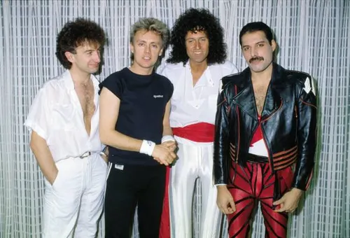

Queen
Banda británica de rock formada en 1970 en Londres

Integrantes del grupo
Brian May
Freddie Mercury
John Deacon
Roger Taylor
Discografia
Grandes éxitos de Queen
Año
Disco
1975
At Night at tde Opera
1986
A Kind of a Magic
1989
The Miracle
"A Kind of Magic" fue el álbum más exitoso
Sitio web oficial
www.queenonline.com